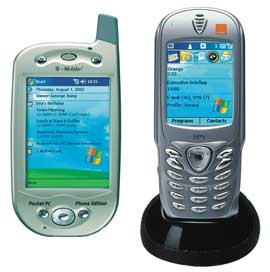
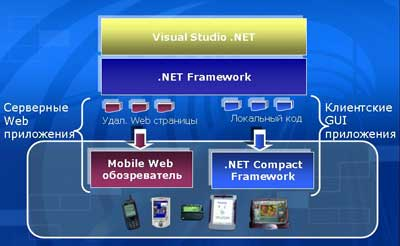

Андрей Колесов
Распространение беспроводных технологий связи и быстрое повышение вычислительной мощности различного рода карманных устройств (телефоны, органайзеры и т. п.) в конце прошлого века позволили ИТ-аналитикам говорить о возможности скорого заката эпохи персональных компьютеров и перехода к эре мобильных средств. Конечно же, нет ничего вечного на земле! Компьютерный мир постоянно меняется, сегодня он не такой, каким был 10 лет назад, а через еще десяток лет будет совсем иным.
Но все же прогнозы революционной замены одних технологий новыми, качественно другими, вряд ли будут верны. В свое время появление персональных компьютеров и перенос вычислительных мощностей, доступных ранее только в рамках ВЦ, на рабочий стол пользователя не отменили необходимости в централизованных центрах обработки данных. И это вполне понятно: ведь ПК - это не столько альтернатива мэйнфреймам, сколько принципиально новые возможности для расширения сферы применения вычислительной техники в целом. И мы в недалекой ИТ-истории видели, как после недолгого периода иллюзий на тему о том, что "ПК убьют мэйнфреймы", в корпоративной сфере наступил этап бурного развития именно серверных технологий. А это, в свою очередь, было бы невозможно без широкого распространения ПК. Такова диалектика развития.
Нечто похожее мы сегодня наблюдаем и в области мобильных устройств, которые не столько конкурируют с настольными ПК и тем более серверами, сколько приводят к качественно новому расширению областей применения компьютерной техники и смогут стать отличным катализатором для дальнейшего развития всех составных частей ИТ-мира. Поэтому, говоря о том, что XXI век будет веком мобильных технологий, нужно понимать относительность этого тезиса: развиваться будут все направления ИТ-отрасли.
Впрочем, разговоры о закате ПК имели в свое время и явно выраженный маркетинговый контекст. К концу XX века стало очевидно, что Microsoft заняла монопольное положение на рынке настольных компьютеров, и все попытки предотвратить эту ситуацию, предпринятые в середине 90-х годов (IBM, Sun, Oracle и т. д.), оказались в целом безуспешными. Новое динамично развивающееся ИТ-направление позволяло разработчикам альтернативных программных платформ "отыграться" в сфере мобильных и встроенных систем. Тем более что компания Билла Гейтса, как и несколькими годами ранее с Интернетом, запоздала с выходом в этот новый сегмент рынка.
Однако Microsoft - не тот игрок, которого могут смутить временные неудачи. Корпорация на рубеже тысячелетий резко повысила свою активность в новом для себя направлении и сегодня стала одним из лидеров отрасли мобильных ИТ (впрочем, хвала Создателю, не монополистом!).
Мобильные и встроенные
В ходе своей реструктуризации в 2002 г. корпорация Microsoft (http://www.microsoft.com) выделила семь основных направлений своей деятельности, одним из которых стало Mobile & Embedded Devices, включающее разработку ПО для мобильного и встроенного применения. Показатели 2005-го финансового года, закончившегося 30 июня, однозначно говорят о том, что эффективность этого вида деятельности компании пока оценивать преждевременно - объемы продаж здесь по ее меркам незначительны, а затраты на новые разработки достаточно велики, поэтому направление в целом пока убыточно (табл. 1).
Таблица 1. Финансовые показатели отдельных направлений бизнеса Microsoft в 2005-м финансовом году
| Продуктовая категория | Состав продуктов | Продажи (доходы), млн долл. | Операционная прибыль, млн долл. |
| Client | Все версии клиентских Windows |
12 234
|
9442
|
| Information Worker | Приложения и серверы семейства Office System |
11 013
|
7915
|
| Server & Tools | Серверные системы и средства разработки |
9885
|
3259
|
| Microsoft Business Solutions | Приложения для автоматизации управления предприятием |
803
|
-201
|
| MSN | Подписка и услуги Интернет-службы MSN |
2274
|
405
|
| Mobile & Embedded Devices | Мобильные и встроенные ОС |
337
|
-46
|
| Home & Entertainment | ПО и оборудование для домашних пользователей |
3242
|
-391
|
| Прочие | Общие и административные расходы |
-
|
-5822
|
| Итого |
39 788
|
14 561
|
|
| Источник: Microsoft. | |||
Впрочем, данные показатели скорее говорят о соотношении сегментов мобильных и настольно-серверных технологий в области софта. Объем же продаж мобильно-встроенного ПО в 337 млн долл., безусловно, делает Microsoft одним из ведущих поставщиков в этой сфере. В то же время нужно подчеркнуть, что чисто финансовые показатели не отражают в полной мере реальной роли Mobile & Embedded Devices в бизнесе корпорации, так как мобильные технологии очень важны в деле успешного продвижения "основных" продуктовых линеек Microsoft. С другой стороны, успешная деятельность компании на мобильном фронте объясняется в первую очередь использованием всего потенциала "традиционных" программных решений.
Хотя термин "мобильные системы" уже давно вошел в наш обиход, хотелось бы, не вдаваясь в детализацию, сделать некоторые уточнения по этому поводу. С точки зрения архитектуры и назначения современные вычислительные устройства, наверное, можно с известной степенью условности разделить на "встроенные системы" и "компьютеры". Компьютеры - это знакомые всем ПК, серверы, мэйнфреймы и т. д. Их отличительная особенность - использование классической архитектуры вычислительных машин (процессор, иерархическая память, внешние устройства), модульная реализация и универсальность (возможность решения широкого круга задач). Важные их характеристики - довольно четкое разделение на аппаратные и программные продуктовые составляющие, а также довольно ограниченное число используемых процессорных архитектур. Для пользователя же самое главное - это возможность аппаратно-программной (в основном - программной) реконфигурации для решения нужных ему задач.
Встроенные (embеdded) системы изначально ориентированы на решение узкоспециализированных задач с минимальными возможностями их реконфигурирования в ходе эксплуатации. В качестве примера можно привести устройства управления промышленными установками и бытовыми приборами, бортовые компьютеры, игровые приставки, органайзеры и калькуляторы и т. п. В них тоже есть аппаратные и программные компоненты, но с точки зрения пользователя это единый продукт. В таких системах, как правило, применяются упрощенные архитектурные решения (одно- или двухуровневая организация памяти, отсутствие модульности) и предъявляются повышенные требования к габаритам и стоимости.
Рассуждения о встроенных системах и компьютерах понадобились нам, чтобы подчеркнуть два ключевых момента. Во-первых, создание программной платформы для встроенных систем в технологическом и маркетинговом плане существенно отличается от ситуации с традиционными компьютерами. Например, в первом случае имеется огромное число устройств разного типа, использующих столь же большое количество микропроцессоров различной архитектуры, для пользователя аппаратура и используемое на ней ПО представляют собой единый, практически немодифицируемый продукт, разработка мобильных приложений ведется в кросс-режиме.
Во-вторых, под мобильными системами в этой статье мы будем в первую очередь подразумевать карманные персональные компьютеры (КПК) и интеллектуальные беспроводные устройства (то, что можно носить в кармане пиджака или дамской сумочке), которые относятся, в общем-то, к категории "встроенных систем" (в отличие от ноутбуков, которые следует в целом считать "компьютерами"*). Впрочем, при этом стоит подчеркнуть относительность любой категоризации - появление Tablet PC (их мы тоже не рассматриваем в данном обзоре) в значительной степени стерло грань между описанными выше классами вычислительных устройств (на тему Tablet PC см. "Tablet PC осваивает русский", "BYTE/Россия" N 1'2005, и "Введение в разработку приложений для планшетных ПК", "BYTE/Россия" N 7'2005).
* Еще один аспект относительности понятия "мобильный": 10 лет назад это определение часто употреблялось по отношению к ноутбукам, которые можно было носить с одного рабочего места на другое (из офиса домой и обратно). Сейчас это понятие чаще всего ассоциируется с беспроводной связью и возможностью человека работать в любом месте в любое время с помощью широкого спектра устройств доступа.
Технологическая платформа для мобильных устройств
Microsoft вышла на рынок встроенных устройств в 1996 г., представив первую версию Windows CE, а также комплекс ПО для появившихся тогда КПК Handheld PC 1.0. С тех пор на этом рынке корпорация продолжает выступать как поставщик двух типов платформ - технологической и пользовательской.
Сейчас в арсенале корпорации имеется набор ОС для некомпьютерных интеллектуальных устройств, в состав которого входят несколько классических ОС с лицензионным ограничением на использование только во встраиваемых и некомпьютерных устройствах и версии серверных ОС для создания специализированных сетевых серверов (см. http://www.msembedded.ru). Но ведущая роль тут отводится двум флагманским платформам** - Windows XP Embedded и Windows CE. Первая из них реализована на базе ядра Windows XP и предназначена для использования в достаточно сложных устройствах (банкоматах, игровых автоматах, торговом оборудовании и т. д.), в которых требуется высокая производительность, защита информации, использование сложного прикладного ПО. Windows CE создана для мобильных устройств, терминалов, сотовых и IP-телефонов, телевизионных приставок, промышленной автоматики и других устройств, где требуется минимальный размер, поддержка разных микропроцессорных архитектур, а также работа в условиях реального времени.
** См. также статью "Платформа Microsoft Windows для интеллектуальных устройств", "BYTE/Россия" N 9'2004.
Отдельно нужно сказать о .NET Compact Framework - варианте операционной cреды .NET Framework, адаптированном для мобильных устройств и включающем подмножество библиотек классов Visual Studio .NET и среду исполнения CLR. Этот компонент сегодня входит во все варианты встраиваемых ОС и служит ключевым звеном, связывающим мобильные и настольные технологии Microsoft.
В августе 2004 г. Microsoft выпустила Windows CE 5.0 (кодовое название - Macallan). Основные ее новшества по сравнению с версией 4.2 определяются развитием аппаратных технологий, а также расширением возможностей разработчиков ПО. В новой версии увеличен список поддерживаемых микропроцессоров, расширен набор мультимедийных функций (Direct3D Mobile для мультимедийных, игровых и других приложений). Повышенная безопасность достигается благодаря средствам прогнозирования опасностей и настройки безопасности по умолчанию, а также поддержке стандарта AES (Advanced Encryption Standard).
Производительность труда разработчиков в Windows CE 5.0 улучшена за счет драйверов устройств, пригодных для промышленной эксплуатации, и унифицированной сборки. Появились улучшенные средства испытания и обслуживания - Windows Error Reporting (отчет об ошибках Windows), расширена функциональность Windows CE Test Kit (испытательного комплекта для Windows CE). Реализован широкий доступ к исходному коду и гибкость разработки - в комплект поставки входят 2,5 млн строк исходного кода (на 25% больше по сравнению с версией 4.2). Модифицированная среда Platform Builder включает все инструменты разработки, необходимые для планирования, разработки, сборки, тестирования и отладки создаваемых систем. За счет использования XML-стандартов повышена управляемость и гибкость операций при работе с Windows CE.
Вообще говоря, Windows CE - это даже не операционная система в традиционном понимании, а технологическая платформа для создания разнообразных программных решений, в том числе и OC (например, на ее базе выпущены Windows Mobile для смартфонов и Pocket PC). Она поставляется только разработчикам устройств, которые на ее основе создают законченные решения (Windows CE подходит не только для карманных устройств, она широко применяется, например, для управления станками, светофорами и т. п.). При этом существуют разные модели распространения этой системы, в том числе в исходных кодах с возможностью внесения изменений и адаптации под конкретное устройство.
Windows CE представляет собой набор библиотек и исходных текстов, из которых с помощью кросс-компилятора и программы сборки получается готовый образ ОС, с включенными прикладными программами, готовый к загрузке в целевое устройство. Процесс сборки напоминает скорее разработку прикладной программы - для этого применяется специальная версия среды разработки, называемая Platform Builder и похожая на Visual Studio. Отладка и тестирование выполняются с помощью профайлера кода, эмулятора оборудования и некоторых других инструментов.
Ядро и основные модули, включая графическую оболочку, поставляются с исходными текстами кода, что позволяет точно настраивать и адаптировать систему с учетом требований к разрабатываемому устройству. По стандартной лицензии разработчик не может модифицировать в коммерческих целях исходный код, однако для тех, кому это крайне необходимо, существует специальная программа лицензирования.
В то же время термин Windows в названии системы используется не для красного словца: она построена на подмножестве стандартного интерфейса программирования Win32, что позволяет переносить прикладные программы, разработанные для настольных компьютеров, на уровне исходных текстов с минимальными модификациями. В состав Windows CE 5.0 входит специальная версия исполняющего ядра - .NET Compact Framework 2.0. В поставку включен также набор программ для просмотра документов в форматах приложений из состава Microsoft Office, таких, как Word, Excel, PowerPoint. Кроме того, в систему входят два полноценных приложения: клиент электронной почты Inbox и WordPad, упрощенный редактор текстов в формате Microsoft Word или RTF.
Весной 2005 г. появилась также бесплатная библиотека классов, реализованная на базе управляемого кода, для построения приложений с применением беспроводной связи Bluetooth в среде Windows CE и Windows Mobile. Она поставляется в составе набора Windows Embedded Source Tools for Bluetooth Technology, который распространяется на условиях лицензирования Shared Source (бесплатно для использования разработчиками).
Windows Mobile - платформа для пользователей
Windows Mobile (ранее называлась Windows Powered) - это семейство программных систем для пользователя, предназначенных для работы на соответствующих типах устройств. По назначению они аналогичны привычным настольным Windows, но поставляются только в составе конкретных устройств и содержат полный набор прикладного ПО (офисные приложения и т. п.). Соответственно пользователь ограничен в возможностях настройки такой ОС и пополнения ее новыми приложениями (фактически он работает только с тем, что купил в составе устройства).
Microsoft традиционно выпускает Windows Mobile для двух типов мобильных устройств - Pocket PC и Smartphone, - которые отражают основные направления развития беспроводных вычислительных систем. Первый тип - это карманные компьютеры с дополнительными возможностями сотовой связи в ценовом диапазоне 400-700 долл., второй - это сотовый телефон с расширенными вычислительными функциями стоимостью 150-300 долл. (табл. 2 и рис. 1).
|  | Рис. 1. Типичный вид устройств Pocket PC Phone Edition (слева) и Smartphone.
|
Таблица 2. Сравнительные характеристики устройств Pocket PC Phone Edition и Smartphone
| Функции | Pocket PC Phone Edition | Smartphone |
| Общее назначение | КПК с интегрированным сотовым телефоном | Сотовый телефон с интегрированными возможностями КПК |
| Способ выполнения соединения | Экранный телефонный интерфейс | Традиционная телефонная кнопочная панель |
| Текстовый ввод | Перьевой или сенсорный экран | В основном обычный текстовый ввод |
| Навигация по экрану | Меню и панели инструментов | Кнопочное управление |
| Габариты, см | 7,5x15 | 5x10 |
| Примечание: конкретные характеристики для различных моделей могут отличаться от указанных. | ||
В мае 2005 г. корпорация объявила о начале поставок Windows Mobile 5.0, которая пришла на смену версии 2003. Эта ОС построена на базе Windows CE 5.0, включающей специальный вариант исполняющего ядра .NET - .NET Compact Framework 2.0. В ней обеспечен более высокий уровень настройки аппаратуры и программных решений, повышено быстродействие, в том числе приложений Microsoft Office, улучшена работа с постоянной памятью, а также усилены мультимедийные технологии за счет использования Windows Media Player 10 Mobile и поддержки приводов жестких дисков.
Пять лет назад, представляя свою первую мобильную ОС, Microsoft выглядела на этом рынке явным новичком. Кроме того, на тот момент только три производителя предлагали Pocket PC на основе этой технологии. Сегодня устройства на базе Windows Mobile выпускают около 40 компаний, их поддерживают 68 операторов сотовой связи в 48 странах. Динамику расширения сферы влияния Windows Mobile отражает и то, что в версии 5.0 появилось еще одно издание - Portable Media Center для портативных интеллектуальных медиаплееров.
С точки зрения пользователей функциональные новшества Windows Mobile 5.0 можно разделить на две категории - делового назначения и возможностей мультимедиа.
В первом случае нужно упомянуть прежде всего расширение возможностей офисных приложений в издании для Pocket PC. Word Mobile позволяет теперь работать с таблицами, списками и внедренными изображениями, Excel Mobile - с графиками и диаграммами, а с помощью новой программы PowerPoint Mobile можно работать с презентациями. Для карманных ПК предусмотрена также возможность автоматического сохранения данных в постоянной памяти на случай отключения питания от батарей. В состав Windows Mobile 5.0 включены улучшенные средства MSN Messenger с использованием служб мгновенных сообщений. Реализована расширенная поддержка ActiveSync 4.0 для синхронизации данных, в том числе через беспроводную связь Bluetooth. Кроме того, потребители смогут оценить улучшенные возможности ручных операций с экраном и клавиатурой. В целом высокий уровень безопасности OC подтверждается сертификацией по американским стандартам FIPS 140-2.
Мультимедийные возможности Windows Mobile 5.0 определяются в основном включением в состав системы нового Windows Media Player 10 Mobile, который поддерживает форматы файлов Windows Media Audio, Windows Media Video и MP3, а также обеспечивают простую синхронизацию с базами мультимедийных данных на настольном ПК. Встроенная поддержка USB 2.0 и внешних накопителей на жестких дисках решает проблемы доступа к большим информационным архивам и взаимодействия с ПК. В состав системы вошло также новое приложение для работы с видео и картинками.
Что касается операторов связи и производителей устройств, то они теперь смогут использовать поддержку широкополосных 3G-сетей, модернизированного варианта Bluetooth, а также связи Wi-Fi в смартфонах. Все это позволит создавать новые сервисы в рамках сетей Universal Mobile Telecommunications Service (UMTS) и обеспечивать одновременную передачу голоса и цифровой информации. Новые функции ОС расширяют возможности настройки клиентских устройств, в том числе за счет новых технологий соединений абонентов, таких, как "push-to-talk" (PTT).
В Windows Mobile 5.0 расширена поддержка национальных языков, поэтому уже сейчас производитель устройств может выбрать нужный ему интерфейс (среди которых есть и русский).
В настоящее время на рынке существует более 18 тыс. коммерческих приложений на основе Windows Mobile. В составе версии 5.0 разработчики ПО получат новый ARM-эмулятор и расширенный набор API, включающий поддержку Camera Capture, State & Notification Broker, Contact Picker, Pocket Outlook Object Model (POOM), а также новых графических функций Direct3D, DirectDraw и DirectShow. Кроме того, в новой версии Visual Studio 2005 появятся дополнительные средства для создания мобильных приложений, в том числе территориально ориентированных сервисов, трехмерных игр и видео. Обещано, что Windows Mobile 5.0 будет тесно интегрирована и с SQL Server 2005.
Стратегия продвижения мобильных технологий и поддержка разработчиков ПО
В области мобильных систем сегодня наблюдается отчетливая тенденция повышения функциональности устройств и расширения предоставляемых пользователям услуг. Это объясняется, в частности, тем, что на Западе возможности экстенсивного расширения потребительской клиентской базы и зон покрытия просто исчерпаны. В России рынок мобильной связи еще очень далек от насыщения, но и у нас провайдеры активно наращивают объем и спектр предоставляемых услуг, так как острая конкуренция свела прибыльность самой сотовой связи к минимальным показателям.
В своей стратегии в сфере мобильных технологий Microsoft делает главную ставку на многофункциональные устройства более высокого ценового уровня (в первую очередь Pocket PC, а уже потом - Smartphone), что в целом полностью соответствует ее нацеленности на применение архитектуры "толстого клиента". При этом главный упор компания делает на рынок корпоративных решений, хотя в последнее время можно видеть и повышение интереса к потребительскому сегменту (пример тому - появление версии Windows Mobile Portable Media Center).
Продвижение на корпоративный рынок базируется на высоком уровне интеграции мобильных технологий Microsoft с существующей ИТ-инфраструктурой предприятий, использующих Windows-платформу. Тут нужно отметить, что, несмотря на усилия в области стандартизации, степень унификации в мобильной сфере оставляет желать много лучшего. В значительной степени это определяется тем фактом, что интеллектуальные малогабаритные устройства пришли в корпоративную сферу из потребительской. Но то, что было очень нужно частным пользователям, бывает просто вредным для больших организаций. В качестве характерного примера можно привести заключенное нынешней весной соглашение о сотрудничестве между Microsoft и Nokia в плане поддержки стандартов Exchange Server для работы электронной почты. Чтобы обеспечить такую совместимость, Nokia придется даже отказаться от некоторых "продвинутых" функций собственной реализации. (При этом Nokia - один из самых больших приверженцев Java среди производителей мобильных устройств.)
Как обычно, стратегия Microsoft подразумевает широкое партнерское сотрудничество с представителями различных вертикалей ИТ-рынка. Выше мы уже говорили о растущем использовании технологий корпорации поставщиками оборудования, но за 2005 г. мы наблюдаем и повышение уровня сотрудничества с провайдерами услуг. И все же, как обычно, особая роль в партнерских отношениях отводится независимым разработчикам ПО и, как следствие, - развитию соответствующих инструментов.
В силу вполне понятных причин поначалу средства разработки мобильных приложений Microsoft развивались автономно от традиционных инструментов корпорации и были представлены набором eMbedded Visual Tools 3.0. В него входили eMbedded Visual C++ и eMbedded Visual Basic, ориентированные соответственно на создание высокоэффективного кода и на повышение производительности труда разработчиков.
С появлением в 2002 г. Visual Studio .NET был сделан важный шаг к стиранию различий в разработке мобильных и обычных приложений (см. "Средства разработки для мобильных систем от Microsoft", "BYTE/Россия" No 7'2003). Этот инструмент обеспечивает разработку широкого круга приложений на языках VB.NET и C# для выполнения в среде .NET Compact Framework. Используется та же самая среда, что и для создания настольных и серверных приложений, но только с дополнительными наборами Smart Device Programmability и ASP.NET Mobile Controls (входят в состав VS.NET 2003). С помощью VS.NET можно разрабатывать приложения двух видов - клиентские и мобильные (рис. 2).
|  |
| Рис 2. Схема разработки приложения для мобильных систем с помощью Visual Studio .NET.
|
Однако Visual Studio .NET 2002/2003 позволял создавать только управляемый код, который мог работать в среде .NET Compact Framework. Для создания программ в машинном коде (для обеспечения высокого быстродействия, прямого доступа к аппаратному обеспечению либо для минимизации размера программы) приходилось использовать eMbedded Visual С++ 4.0 для Windows CE 4.х. Более полная унификация средств разработки ожидается с появлением в ноябре 2005 г. пакета Visual Studio 2005, с помощью которого можно будет создавать все виды приложений (см. врезку).
Управлять данными в мобильных приложениях сейчас предлагается с помощью SQL Server 2000 Window CE 2.0, в котором реализованы все наиболее важные функции реляционной СУБД, включая оптимизирующий механизм обработки запросов, поддержку транзакций и различных типов данных. В то же время он не требует большого объема оперативной памяти и весьма экономно расходует системные ресурсы. Данная СУБД может служить для обеспечения доступа к функциям управления данными корпоративного класса с устройств Pocket PC, для разработки приложений, предусматривающих хранение значительных объемов данных на мобильных устройствах и манипулирование этими данными, а также для организации надежного тиражирования данных в средах с мобильными устройствами, периодически подключаемыми к сети. SQL Server CE 2.0 рассчитан на интеграцию с .NET Compact Framework с применением средств Visual Studio .NET.
В конце 2005 г. на рынок выйдет новая версия Microsoft SQL Server 2005, после чего можно ожидать и появления соответствующего варианта для мобильных решений.
Средства разработки приложений для Windows Mobile 5.0Visual Studio 2005 представляет собой единый инструмент создания программ для Windows Mobile 5.0 с использованием машинного (C++), управляемого (C# или Visual Basic .NET с .NET Compact Framework) и серверного (ASP.NET Mobile Controls) кода. Он полностью покрывает функционал Visual Studio .NET 2003 и eMbedded Visual C++ и имеет целый ряд дополнительных возможностей, в частности, новые средства - эмулятор устройств, отладчик, конструкторы данных и пользовательского интерфейса. Наборы разработчиков Windows Mobile 5.0 SDK для Pocket PC и Smartphone включают в себя документацию, примеры приложений, шаблоны, библиотеки и графические образы моделируемых клиентских устройств. ActiveSync 4.0 позволяет связывать Visual Studio 2005 и физические устройства на базе Windows Mobile. В новой версии этого средства улучшена поддержка работы с данными, повышена надежность связи и безопасность. Microsoft Device Emulator 1.0 Community Preview - это автономный вариант эмулятора устройств (часть Visual Studio 2005). |